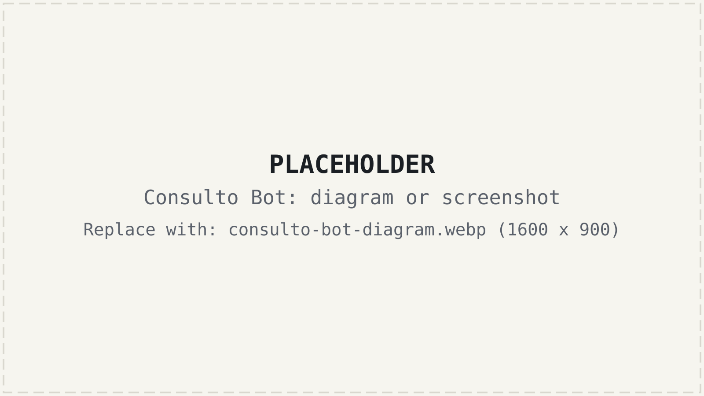

Under development
Consulto Bot
Can an AI assistant give frontline staff accurate, cited answers from their company's own procedures, limited to what their role allows them to see?

The question
In most businesses, procedures live in binders and shared drives, often out of date and hard to search, and changes reach staff unevenly. The question is whether an app that understands the org chart (who reports to whom, who owns each procedure and who may read it) can keep procedures current and answer staff questions with a direct quote and its source, without ever showing anyone a document outside their role.
Where it stands
The core engine was built in November 2026 and is tested on a fictional restaurant: an org chart, three procedures and a change to the closing checklist that moves the final freezer check from 9:30 to 9:45 p.m. A manager proposes the change, a different person must approve it, and it is published to the people it affects, who confirm they have seen it. Asked when the freezer check happens, the closer gets 9:45 p.m., quoted from the new checklist. Someone without access to that checklist is directed to their supervisor by name. Every step is recorded in a log that cannot be edited.
No AI model is connected yet; answers currently come directly from the procedure text. Next come a language model, a mobile-friendly app tested with frontline staff and a training mode for new hires. A pilot business has not been chosen.
How it's tested
Each stage has fixed checks that are run, not just reviewed: a frozen set of staff questions, a scripted walkthrough whose output must match line for line, and checks that the app refuses what it should, such as a manager approving their own change. All 186 automated tests and all 10 acceptance questions pass, rerun from a fresh database each time. They must pass on every run, not once.
Access is enforced inside the search itself, so a document someone cannot see looks exactly like one that does not exist. Once a model is connected, its answers must meet fixed accuracy targets, including 100% on food-safety questions, and an outside engineer will review the access rules before any pilot. No employer's internal documents are used without written permission.